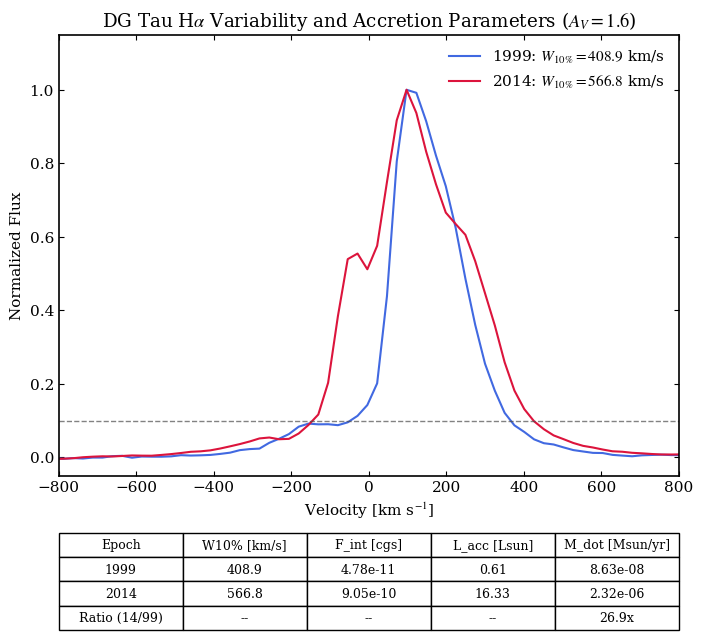
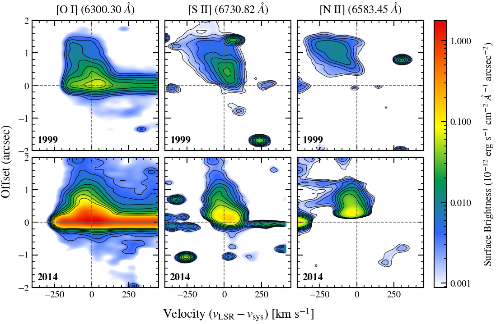
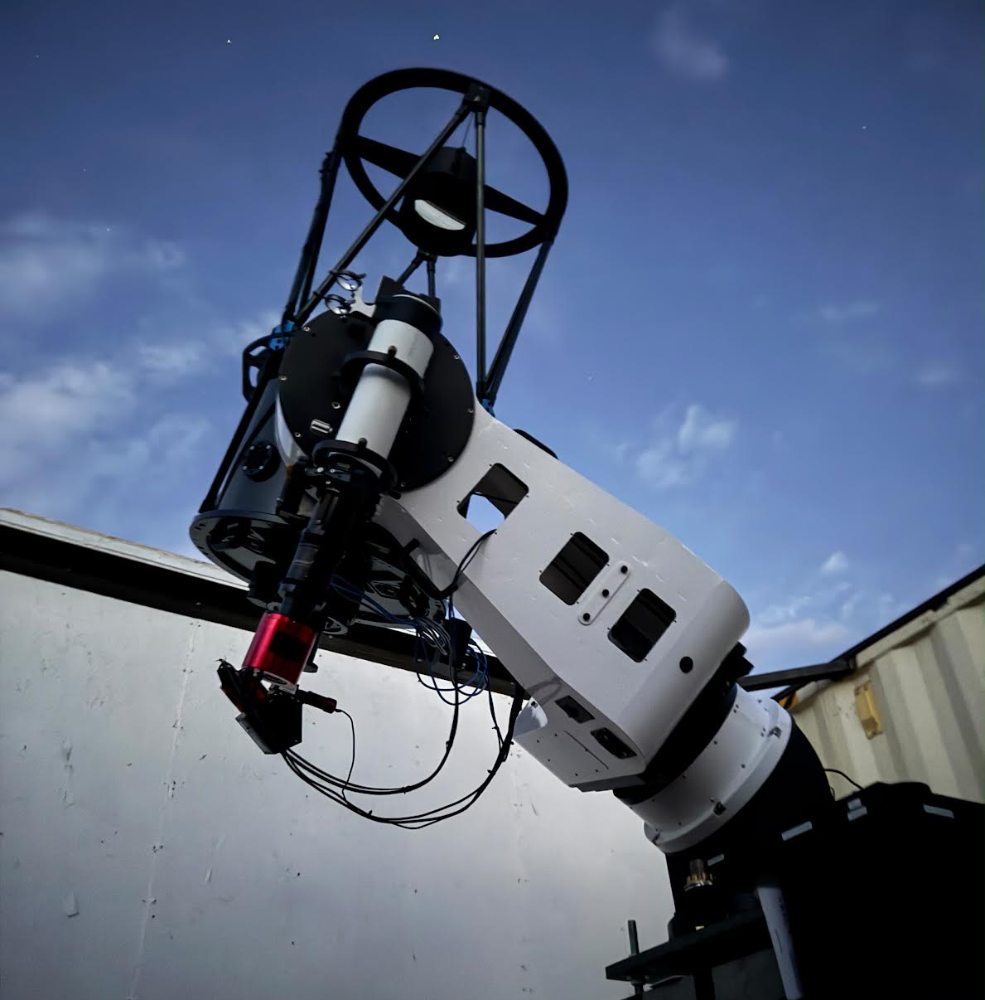
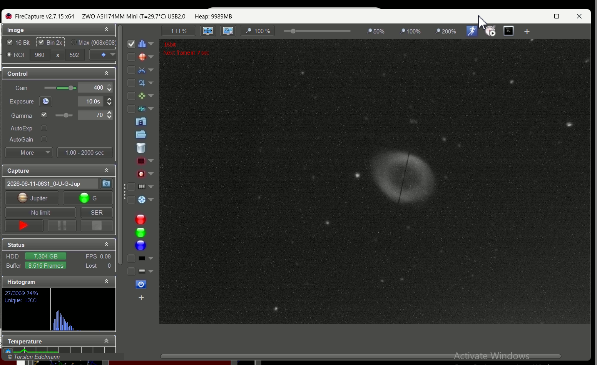

Hello There
Welcome to the website of Dr. Zoubida Ahmane
I am an Associate Professor at the Physics Department, University of Batna 1. My main research field is theoretical astrophysics focusing on plasma modeling, numerical simulations, and high-energy processes in protostellar jets.
I defended my PhD thesis on 23 September 2020 for the degree of Doctor in radiation physics and astrophysics, under a specific collaboration agreement between Università degli Studi di Torino (Italy) and University of Batna 1 (Algeria).
Teaching
My Expertise


Research
My Recent Work
In this study I show simulations of protostar-driven photoionization in Herbig-Haro jets. We compare two different evolutionary simulations, corresponding to a high luminosity case (\(L_{X} = 10^{32}\) erg/s, upper movie) and a low luminosity case (\(L_{X} = 10^{28}\) erg/s, lower movie). While the latter does not produce any noticeable difference in the amount of ionization when compared to the purely radiative case (see paper [Z. Ahmane et al., 2020]), the former results in an appreciably larger ionization rate. Close to the central object we now observe almost \(\approx 50\%\) ionization degree, lowering to \(\approx 10\%\) at large distances.
Current work: HST/STIS spectroscopy of DG Tau jets (multi-epoch) — analysis in progress, manuscript in preparation.
Future Research
Upcoming Directions & Projects

Figure 1: STIS H\(\alpha\) profiles showing wing broadening (\(W_{10\%}: 408.9 \rightarrow 566.8\text{ km s}^{-1}\)), tracing a 27-fold mass accretion burst in DG Tau A.

Figure 2: Position-Velocity diagrams tracking \([\text{O I}]\), \([\text{S II}]\), and \([\text{N II}]\) inner jet turbulence (\(<2''\)>).
The Breathing Jet: A 35-Year Time-Domain Test of DG Tau A: How do protostellar jets sustain high ionization fractions (\(x_e \sim 0.1-0.2\)) over massive distances? Utilizing an exceptional 35-year HST optical baseline, this project investigates a violent 2014 accretion outburst that triggered a 27-fold jump in the mass accretion rate (\(\dot{M}_{acc}\)). This rare phenomenon creates a fascinating physical paradox: does the enhanced central X-ray photoionization drastically increase the jet's ionization fraction, or does the severe density spike (\(n_e\)) cause the plasma to recombine exponentially faster (\(t_{rec} \propto 1/n_e\))? Using three tailored STIS/G750M instrument configurations, we aim to close this loop by directly deriving \(T_e\) using the faint \([\text{O I}] \lambda5577\) line to eliminate systematic errors, mapping dust destruction efficiencies via near-infrared \([\text{Fe II}] \lambda7155, 7172\) profiles, and tracing proper motions to test for structural alterations in the jet's rotation signature.

Figure 3: The newly commissioned 0.5-meter CDK20 f/7.77 telescope on its L-500 mount at Dark Sky New Mexico.

Figure 4: First-light commissioning session showing the Ring Nebula (M57) centered on the 23-micron UVEX spectrograph slit jaws via FireCapture.
Time-Domain Spectroscopy with the TEMPOS Telescope Network: In collaboration with Space Laser Awareness, I am actively preparing for the data exploitation pipeline of the upcoming 0.5-meter telescope deployments in New Mexico and Chile (TEMPOS). Utilizing high-resolution Shelyak UVEX spectrometers, this networked observational capability will allow us to conduct long-term, high-cadence spectroscopic monitoring of young stellar objects (YSOs) and astronomical transients, tracking spectral line variability in real-time. Our recent empirical commissioning configurations achieved an outstanding spectral resolution of \(3.8\text{ \AA}\) (\(R \approx 1650\)) utilizing a precise 23-micron slit aperture, enabling our upcoming pipeline to pivot to active stars across the Cygnus region during summer sky gaps.
Blog
My LabWriting
I regularly write about physics in our daily life and stories in astronomy/astrophysics topics in Arabic, French, and English. I also write about front-end topics (CSS), and occasionally write guest posts for other publications.
Get in touch
Zoubida Ahmane
Department of Physics
Faculty of Science
University of Batna 1
Social links below